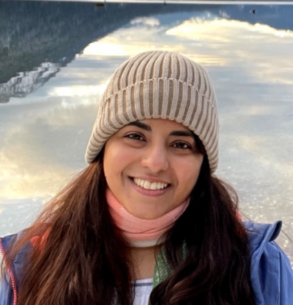

Regulated environments
CLIA-certified processing, GMP production, ISO and FDA audits.

Postdoctoral Researcher, Biomedical AI
University of New Mexico Comprehensive Cancer Center · Ph.D. Bioinformatics, Georgia Tech
Working on biomedical AI
Finding patterns and signals in messy data, through the lens of the experiments that produce it.
I build interpretable AI models over EHR, genomic, and multi-omics data for cancer risk prediction. I started at the bench: four years of assay development before my first pipeline, which is why I ask how data was made before I ask what it shows.
My Ph.D. at Georgia Tech mapped the roughly one million ribonucleotides embedded in every human nuclear genome and showed they are not randomly placed: they form patterns, the human nuclear ribome, that track with gene activity and can change DNA supercoiling. I led the bioinformatics analyses. The work is published in Cell (Georgia Tech coverage), and earned the Mark Borodovsky Prize, given to the top Ph.D. student in the programme.
At MD Anderson's Hanash Lab I validated protein biomarkers for early cancer detection, including the panel behind this lung cancer risk model.
In between, I led frontier-AI evaluation at Turing, building STEM expert teams from scratch and designing the rubrics and failure-mode taxonomies used to probe LLM reasoning.
First genome-wide map of ribonucleotides in human DNA, published in Cell.
Read the paperWon on a hypothesis built from my preliminary ribose-seq analysis.
W. M. Keck FoundationCell, Nature Communications, JAMA Oncology, JNCI, Nucleic Acids Research.
Google ScholarCCLE and TCGA datasets across 33+ cancer types.
Read the paperLed 200+ SMEs at Turing on LLM reasoning evaluation tied to $1M+ revenue.
TuringCLIA-certified processing, GMP production, ISO and FDA audits.
Education on the left, experience on the right. Roles held during a degree are wrapped together with it.
University of New Mexico Comprehensive Cancer Center · Albuquerque, NM
Turing · Remote
Turing · Remote
Turing · Remote
Georgia Institute of Technology · Atlanta, GA
Georgia Institute of Technology, Storici Lab · Atlanta, GA
MD Anderson Cancer Center, Hanash Lab · Houston, TX
University of Houston – Clear Lake · Houston, TX
AnshLabs · Houston, TX
University of Houston – Clear Lake · Houston, TX
Usha Biotech Ltd. · Hyderabad, India
Thadomal Shahani Engineering College · University of Mumbai, India
S. L. Raheja Hospital (a Fortis Associate) · Mumbai, India

rNMPs cluster near CpG islands and track with expression and methylation at transcription start sites.

One mutation floods the genome with rNMPs. The other moves where they land. Only one is visible to a count.

Expression correlation with proliferation and cell-cycle markers across CCLE and TCGA.
Genomics, research practice, and the occasional detour.
A million RNA letters sit inside every human genome. They are not scattered, and they are not just damage.
Read postFour years at the bench before my first pipeline. It changed how I read every dataset since.
Read postA script became a published package. The statistics were the easy part.
Read postEvery peer-reviewed paper, newest first.
Questions, collaborations, or just to say hello.
Prefer a document? View my CV, generated from this site and downloadable as a PDF.